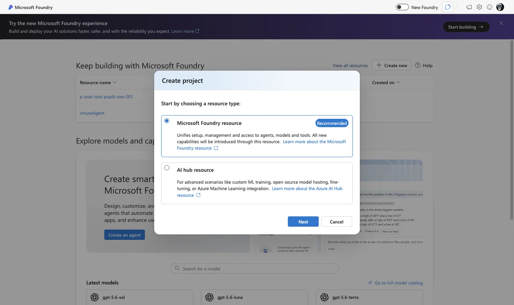
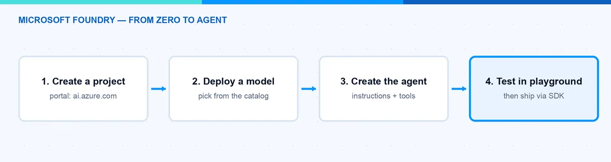
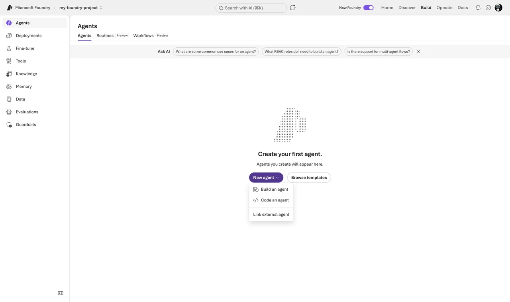
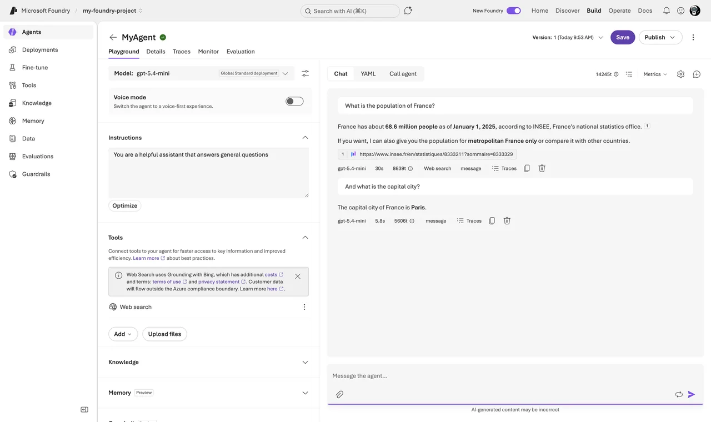
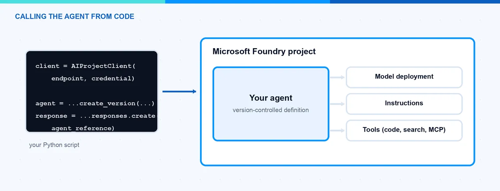

Build Your First AI Agent in Microsoft Foundry Step by Step
AI agents are everywhere right now, and many IT pros ask me where they should start. In this blog post I show you how to build your first Microsoft Foundry agent. We go step by step: create a project in the portal, deploy a model, create the agent with instructions and tools, test it in the playground, and finally call it from Python code. You do not need to be a developer to follow along. At the end you have a working Microsoft Foundry agent that you can extend for your own use cases.
What Is Microsoft Foundry?
Microsoft Foundry is Microsoftâs platform for building AI applications and agents. You might know it under the old name Azure AI Foundry â Microsoft renamed it at Ignite in November 2025, and the portal and the documentation now say Microsoft Foundry. The platform gives you three main things:
- A model catalog with models from OpenAI, Microsoft, Meta, DeepSeek, xAI and other providers that you can deploy with a few clicks.
- The Foundry Agent Service, which hosts your agents. An agent is a model plus instructions plus tools. You define it once and the service keeps it consistent for every user interaction. The new version of this service went generally available in March 2026 and is built on the OpenAI Responses API.
- SDKs and APIs so you can call your models and agents from your own code and automation.
The agent part is the interesting one for us. Instead of sending a system prompt with every request, you create a Microsoft Foundry agent one time with a name, instructions, and optional tools like web search or code interpreter. Then every app or script just references the agent by name. Foundry calls this a prompt agent: pure configuration, no code to host, no compute to pay for beyond the calls. There are also hosted agents where you bring your own code in a container, but that is a topic for another post. If you want the bigger picture of where Microsoft is going with agents, have a look at my post about the agentic stack from Microsoft Build 2026.
What Do I Need Before I Start?
To build a Microsoft Foundry agent you need surprisingly little:
- An Azure subscription. A free account is enough for testing.
- The right permissions. To create the Foundry resource and project you need the Foundry Account Owner role (or Contributor/Owner) on the subscription or resource group. To work inside the project you need the Foundry User role. These roles were renamed in 2026 from âAzure AI Account Ownerâ and âAzure AI Userâ, so do not be confused if you still see the old names in some places â the role IDs and permissions did not change.
- For the code part: Python and the Azure CLI installed on your machine.
Note: You pay for the model usage per token, not for the agent itself. Also, not every model is available in every region, so check the region support and pricing pages before you pick a location for your project.
How Do I Create a Project and Deploy a Model?
A Microsoft Foundry agent always lives inside a project. Here is the click path:
- Go to the Microsoft Foundry portal and sign in with your Azure account. Make sure the New Foundry toggle at the top is on. The steps below are different in the classic experience, so this toggle matters.
- If this is your first visit, the portal asks you to create a project. Select Create a new project. Otherwise, click the project name in the upper-left corner and select Create new project.
- Enter a name, for example
my-first-agent-project. - Open Advanced options if you want to choose the resource group and the region yourself. I recommend a region close to you.
- Click Create project and wait a moment until the project overview page appears.

Next we need a model deployment. The agent needs a brain:
- Select Discover in the upper-right navigation, then Models in the left pane.
- Search for a model, for example gpt-5.4-mini. It is cheap and good enough for a first test.
- Select the model and deploy it with the default settings to add it to your project.
- Note the deployment name. You need it later in the code.

Hint: If you create your project in the West US 3 region, you can try the new instant models (preview) and skip the deployment step completely. Nice for a quick demo.
How Do I Create the Microsoft Foundry Agent?
Now the fun part. We create the Microsoft Foundry agent in the portal:
- Select Build in the upper-right navigation, then Agents in the left pane.
- Click New agent and select Build an agent.
- Give it a name, for example
MyAgent, and click Create and open playground. The portal creates the agent and drops you directly into the agent editor with the playground on the right side.

The agent editor is where your agent takes shape. On the left you find the configuration sections: Instructions, Tools, Knowledge, Memory (Preview), and Guardrail (Preview). Here is what I do for a first agent:
- Select your model deployment from the dropdown, for example the gpt-5.4-mini deployment from the previous step.
- Add instructions. This is the personality and the job description of your agent. For example: âYou are a helpful assistant for IT admins. Answer questions about device management short and precise.â In a real project this is where you spend the most care.
- Check the Tools section. Two useful tools for later: file search lets the agent answer questions from documents you upload, and code interpreter lets the agent write and run Python code, for example to create a chart from numbers.
- Save. Every time you save, Foundry snapshots a new version of the agent. You can compare versions and roll back if a change makes the agent worse. Agents in the new Foundry are addressed by name plus version â there is no agent GUID anymore.

Note: The web search tool is switched on by default for a new agent. It is great for up-to-date answers, but it is billed per use (14 US dollars per 1,000 transactions at the time of writing). My first test agent does not need the web, so I switch it off. Decide consciously instead of paying for a default.
That is already it. The agent is saved in your project and every colleague with the Foundry User role can use it.
How Do I Test the Agent in the Playground?
You do not need any code to test your Microsoft Foundry agent. The playground is already open right next to the agent settings:
- Type a question in the chat box, for example âWrite me a short checklist for onboarding a new Windows device.â
- Check if the answer matches your instructions. If not, adjust the instructions, save, and try again.
- Ask a follow-up question that only makes sense with context, for example âWhich of these steps can I automate?â. The agent keeps the conversation history on the server side, so it should understand what âthese stepsâ means.

This loop â change instructions, test, change again â is where you spend most of your time. Do it in the playground before you touch any code. Every save creates a new version, so you can always go back to the state that worked.
How Do I Call the Agent From Code?
For automation you want to call the Microsoft Foundry agent from a script. The pattern to understand is the two-client pattern: the project client (AIProjectClient) manages the agent definition and its versions, and the OpenAI client (from get_openai_client()) does the actual chatting through conversations and responses.
Install the packages azure-ai-projects (version 2.0.0 or higher) and azure-identity with pip, run az login, and copy your project endpoint from the overview page of your project. It has the format https://<resource>.services.ai.azure.com/api/projects/<project>. Then a minimal example looks like this:
# pip install "azure-ai-projects>=2.0.0" azure-identity (run az login first)
from azure.identity import DefaultAzureCredential
from azure.ai.projects import AIProjectClient
from azure.ai.projects.models import PromptAgentDefinition
project = AIProjectClient(
endpoint="https://<resource>.services.ai.azure.com/api/projects/<project>",
credential=DefaultAzureCredential(),
)
# Create the agent, or snapshot a new version if it already exists
agent = project.agents.create_version(
agent_name="MyAgent",
definition=PromptAgentDefinition(
model="gpt-5.4-mini", # your model deployment name
instructions="You are a helpful assistant for IT admins. Answer short and precise.",
),
)
print(f"Agent: {agent.name}, version: {agent.version}")
# Chat with the agent: the OpenAI client is pre-bound to MyAgent
openai = project.get_openai_client(agent_name="MyAgent")
conversation = openai.conversations.create()
reply = openai.responses.create(
conversation=conversation.id,
input="Write a short checklist for onboarding a new Windows device.",
)
print(reply.output_text)
followup = openai.responses.create(
conversation=conversation.id,
input="Which of these steps can I automate with Autopilot?",
)
print(followup.output_text)The code does three things. It connects to your project with your Azure login. It creates a new version of the agent with create_version â the same call creates the agent if it does not exist yet. And it chats through a conversation: the second question never mentions the checklist, but the agent answers correctly because the conversation carries the context on the server. That is exactly what you saw in the playground, now from code.

Note: The agent API changed in 2025/2026 and there are two generations. If you find older tutorials with threads, runs, and agent GUIDs, they use the deprecated classic API. The old Assistants API retires on August 26, 2026, and the classic agent service is announced to retire on March 31, 2027. The new SDK (azure-ai-projects 2.x) is not compatible with the old 1.x samples, so check the imports before you copy code. The current steps are in the official Microsoft Foundry quickstart.
What Does the Agent Cost?
The pricing of a prompt agent is pleasantly simple. The agent runtime itself has no extra charge. You pay the model tokens your agent consumes, plus a meter for each tool you switch on. At the time of writing (US East prices): web search costs 14 US dollars per 1,000 transactions, code interpreter costs 0.033 US dollars per session, and file search storage costs 0.11 US dollars per GB per day with the first GB free. An agent without tools, like the one we built here, costs exactly its tokens.
Whatâs Next?
You now have a working Microsoft Foundry agent: a project, a model deployment, an agent with instructions, and a Python script that talks to it. From here you can connect your own data with file search, add tools like MCP servers or OpenAPI actions, or publish the agent to Microsoft Teams and Microsoft 365 Copilot. Before you ship anything to real users, please also test it properly â I wrote a separate post about how to evaluate AI agents in Microsoft Foundry. If you are still choosing the platform, my Microsoft Foundry vs Copilot Studio comparison maps the trade-offs. And if you want to play with models without any cloud at all, have a look at my post about running AI models offline with Foundry Local.
I hope this is a little help.
Stay healthy, Cheers Jannik